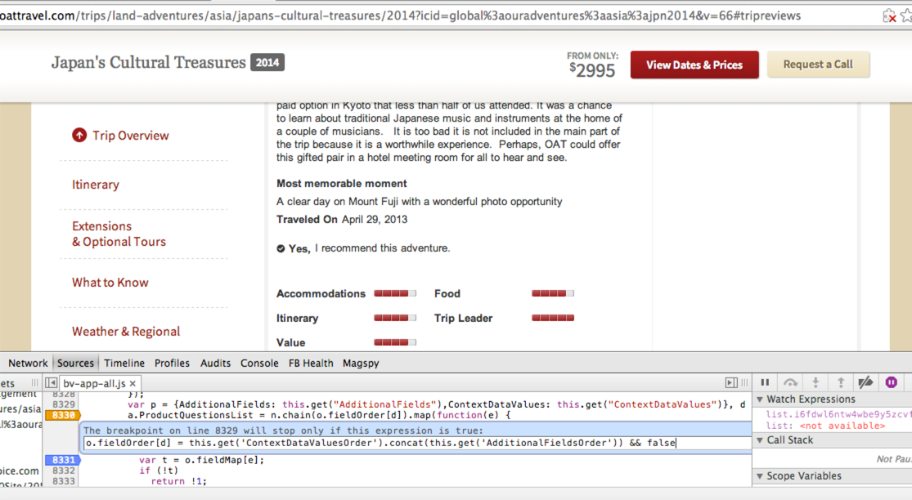

Digging, Debugging
<witty subtitle here>
Hashtags: #digdebug #jqcon
Brian Arnold
- Senior Software Engineer @ Bazaarvoice
- Previously: Lead Support & Software Engineer at SitePen
- Dojo core committer
- Lord of Waterdeep
- Rock Band guitar expert
Outline
- Non-technical tips
- Understand the tools
- Techniques
Non-technical Tips
Be open to learning
We are professional students
Learn JavaScript
No, really, learn the core
Read the spec, read JS: TDG, go beyond the good parts

Learn about DevTools
We'll talk more about this later
To the dev who has only a
console.log, everything looks like a string
Rubber Duck
- Colleagues
- Friends at other shops
- An actual rubber duck
Understand the tools
Command Line API
Originally pioneered in Firebug, now fairly ubiquitous
Feature support varies, learn your environment of choice
Moving between Elements and Console
$0$_inspect
Detailed viewing
console.*dircopy
STOP THE PRESSES
debugger;- Breakpoints
- Watch things
Other types of breaks
- DOM Breakpoints
- XHR Breakpoints
Sources
- Fuzzy finder opening
- Pretty printing
- Breaking on some/all errors
Profiling
- Memory
- Runtime
Techniques
(Here there be hacks)
Use a style guide, damnit
Inconsistently written code SUCKS
Look into things like Idiomatic for a starting point, and EditorConfig to help enforce it
You don't write code for yourself, you write it for the moron who has to maintain it in a year.
More often than not, you are that moron.
Private Mode
Not just for hiding things
Extra Users
For when Private Mode isn't enough
Breakpoint Actions
Use and abuse of conditional breakpoints for fun and profit*
* There may not be profit
Crimes Against Production
{kind=link}
`console.group` EXTREME!!1!
_(toWrap)
.chain()
.functions()
.each(function (method) {
var oldMethod = toWrap[method];
toWrap[method] = function () {
var groupName = identifier + ': ' + method;
console.group(groupName);
console.log('%s args: %o', method, arguments);
var value = oldMethod.apply(this, arguments);
console.log('%s return value: %o', method, value);
console.groupEnd(groupName);
return value;
};
});